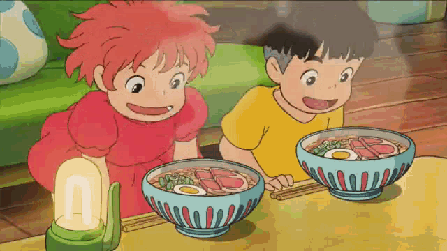

Ham Noodles Recipe

The scene above is from the movie Ponyo.
Desciption
Learn how to make ham noodles.
Ingredients
- 1 packet of instant noodles
- Water
- 1 slice of cooked ham
- 1 egg
- Green onion
Steps
- Boil water.
- Transfer the boiling water into a saucepan. Add the egg and add more boiling water until the egg is fully submerged.
- Cover the saucepan with a lid and wait for about 8 minutes. Proceed to Step 5 in the meantime.
- Chop green onion into bits.
- Slice the ham into halves. Put both ingredients aside.
- Add instant noodles into a bowl. Pour boiling water over the noodles and cover with a lid. Set aside for 3 minutes.
- After the first minute, separate the nooodles and add in ham, hard-boiled egg and green onion. Cover the ramen bowl with a lid again.
- Wait for 2 more minutes and the dish is ready.
Recipe credit
The recipe for this webpage came from here.
Navigation